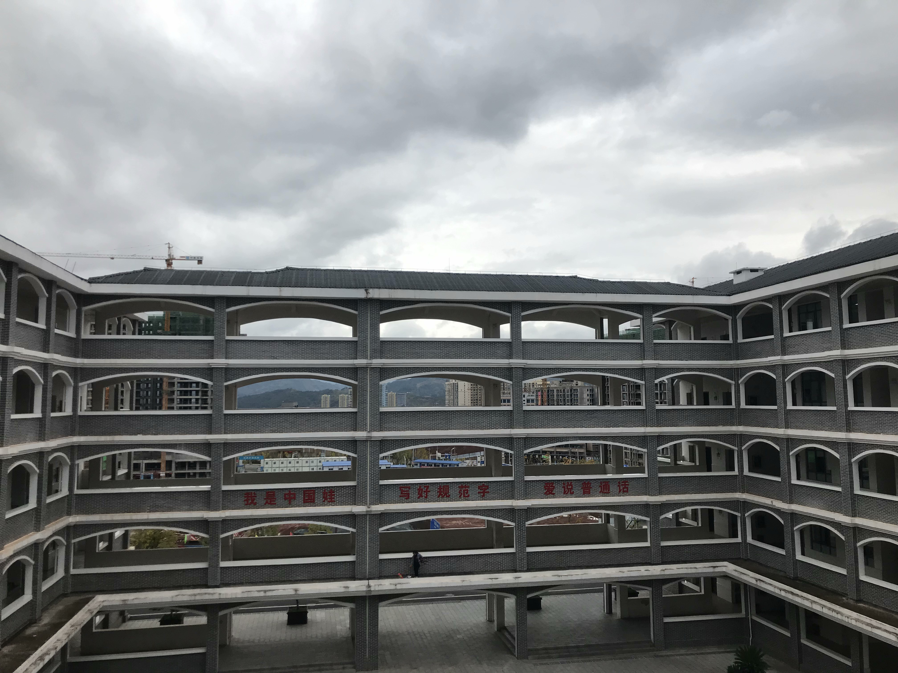
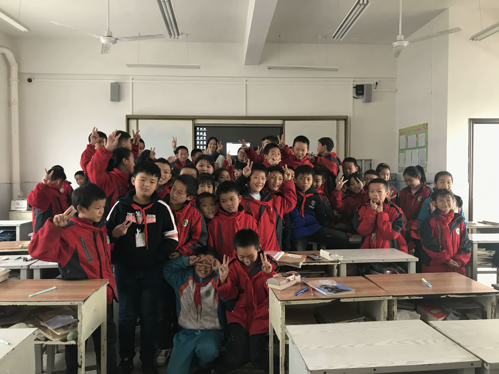

November 2019
By teaching, I learnt.
The team
The school
Group photo
初识余庆，请多关照
早就听闻贵州“天无三日晴，地无三里平”，所以心中就暗暗给贵州下了个“山区”的定义。此次亲身来到祖国的多彩贵州，才发现自己原来还是过于狭隘了，途中的所见所闻不仅洗刷了我对贵州的刻板印象，还让我切身体会到了祖国西部地区公共设施和基础教育的迅速发展.
飞机一落地，我就搭上了前往余庆县的吉普车。从贵阳的龙洞堡机场到余庆，我们必须穿越144千米长的安江高速。透过车窗向外看去，四周群山环绕，满目皆是远山含黛，薄雾袅袅。虽然山地起伏，高低错落，高速公路的桥墩却都稳稳地扎在山坡上，巍然矗立，四平八稳。在后来与他人的交流中我了解到，祖国高度重视贵州地区基础设施以及利民工程的建设，在许多人才和技术工人的努力下，贵州的多项工程项目已然成为世界之最，其中包括了北盘江大桥和飞龙湖观光廊。原来贵州不仅有着青山环抱的清幽外表，还有着钢筋水泥的低奢内涵，“人杰地灵”实至名归。
贵州给了我惊艳的第一印象，也让我对余庆县城关一小支教活动的期待值大大提升。果不其然，小学里大部分的同学都非常活泼可爱，他们会在上课积极举手配合我们讲课，也会在该守纪律时闭上嘴巴，乖乖坐好。阳光可爱的孩子们定然是此次支教活动中灿烂的一笔，但过程中的其他见闻也让我有所思悟。我们教的五年级共有六个班，每个班的人数都超过60人，教室挤得满满当当；放大了看，城关一小共有两万六百多位师生，一共却只有堪堪一百位左右的老师。师资力量的缺乏会阻碍教学的质量，加之教师在如今的社会地位远低于律师、医生等职业，很少的精英人才会自愿投入任劳任怨的教师行业。说到这里，我不得不自嘲自己也是个“俗人”。我很小的时候也有一个教师梦，因为当老师可以管学生，从“被管理者”变成“管理者”，这是多少人的夙愿啊。可是渐渐许许多多的声音告诉我，当老师很累，老师收入低，每天勤勤恳恳矜矜业业最后还不如去公司打工。也有人说当老师压力太大，不仅学生要管，学生家长更要管，管来管去谁也落不到好……听到越来越多的负面评论，我毫不犹豫地动摇了，当老师已经不再位于我的理想职业之列。可是城关一小天真活泼的孩子们深深的地感动了我，他们对学习的积极性、对国外的世界的好奇，以及他们对我说出的那一句句“老师你们好棒啊”“老师我真羡慕你们”，都触动了我心底的一根弦。有几刻我真的觉得自己好自私，到底是我给孩子们带去知识，还是孩子们给我带来救赎？
虽然我们的支教只有短短一周，我们与孩子们的交流也仅仅浮于表面，但是通过这次活动，我切实体会到了以贵州为例的西部地区基础教育发展面临的重大挑战：师资力量的匮乏。改变西部地区教育教育现状的担子已经落在了我们这一代人的肩上，只有我们改变自己对世界的看法，放下所谓的虚荣和成见，才能真正帮助需要帮助的人。我们想成为的是社会主义的接班人，而不是贫富分化的推动者。
在余庆的这几天里，我看到了贵州的蓬勃发展，也体会到了教育的意义和当代年轻人的责任。总而言之，这是我第一次来到余庆，见闻浅薄，请多指教。
--------The end--------